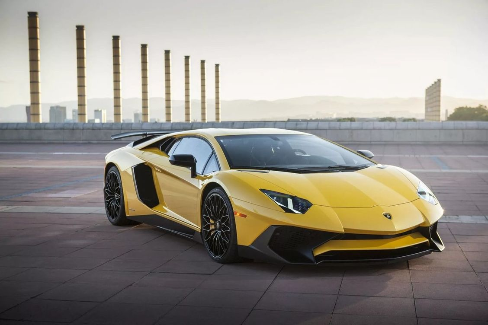
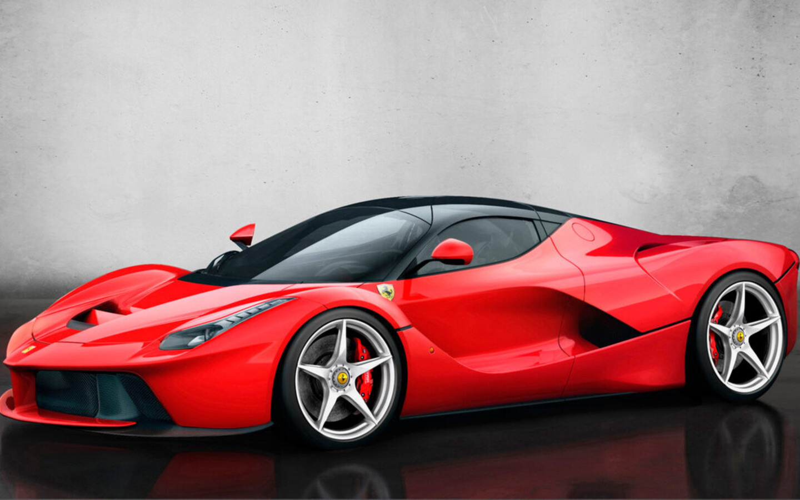

Bugatti

In 1909 Ettore Bugatti founded his own company[1]. As a factory, he used an abandoned dye factory in Molsem. Bugatti Type 13 appeared in 1910 and at the French Grand Prix in 1911, driven by Ernest Friedrich, took second place, overtaking more powerful cars. After the First World War, a slightly modified Type 13 won the Passenger Car Cup at Le Mans in 1920. Based on the Type 13, Bugatti Type 15, 17, 22 and 23 models were created with different chassis lengths. Bugatti Type 22 with a 16-valve engine took the first four places in the Brescia Grand Prix in 1921, for which the Type models 13, 15, 17, 22, 23, 27 with 16-valve engines, they received the nickname "Brescia". The Bugatti Type 18, a supercar of its time, was introduced in 1912. The 100 hp engine could accelerate the car up to 160 km/h. A total of 7 copies were created. In 1923, the Bugatti Type 32 was created, nicknamed "Tank". The car has played a pioneering role in terms of attention to aerodynamics in the design of racing cars. Bugatti Type 35, which appeared in 1924, became one of the most successful racing cars of its time, with more than 2,000 victories. Type 35 and its modifications won the Grand Prix of Spain, France, Germany, Monaco, Czechoslovakia; for five years they held the first place in the Targa Florio races. For the first time, a horseshoe-shaped radiator grille appeared in the Bugatti Type 35 design, which has become a distinctive element of many of the company's cars. The car became the "calling card" of the company and was a success with wealthy buyers. In 1926, the Bugatti Type 41 Royale appeared — it was one of the most luxurious and expensive cars of its time.
Lamborgini
In the early 1960s Ferruccio Lamborghini was the owner of several companies and could afford buy expensive cars. At various times he had a Mercedes 300SL, several Maserati 3500 GT, Jaguar E-type. He also owned a Ferrari 250 GT of various versions. But in every car he found some shortcomings. There are several versions about the reasons why Lamborghini founded his own company. All these versions boil down to a conflict between Enzo Ferrari (the owner of the Ferrari company) and Ferruccio Lamborghini. The most popular version, told by Ferruccio Lamborghini's son, says that Lamborghini arrived to the factory to Enzo Ferrari to complain about the quality of the clutch in his Ferrari 250 GT car. Enzo I sent the Lamborghini back with a wish to continue working with tractors, because Lamborghini doesn't understand anything about cars, let alone sports cars. Lamborghini returned to the factory, disassembled the transmission in his Ferrari 250 GT and found that the manufacturer of many parts is the same as in Lamborghini tractors. He found a suitable replacement in his warehouses, and after the assembly the problem was solved. Ferruccio decided that his car would have a V12 engine, this engine was also chosen by economic reasons. Ferruccio attracted a talented engineer Giotto Bizzarini to his project (Giotto Bizzarrini), owner of Bizzarrini S.p.A, who had previously developed V12 for Ferrari. The prototype of the Lamborghini 350 GTV car was presented to the public at the Turin Auto Show in October 1963[8]. In March 1964, the first production car Lamborghini 350 GT was shown. Sales the production versions were very successful. Born under the sign of Taurus, Ferruccio Lamborghini decorated car logo with the image of a bull. The success of the 350 GT model was followed by the equally successful Lamborghini 400 GT model, which brought there are enough funds to develop the first real "pearl" of the company, the legendary Lamborghini Miura. This prototype car was demonstrated by Ferruccio himself in November 1965 at the auto show in Turin, and already in March 1966, a working version was presented at the Geneva Automobile Exhibition. Miura was a great success — 111 cars were sold in 1967 alone — and the company received fame all over the world. In 1971, Lamborghini again surprised the world with the prototype of the new revolutionary Lamborghini Countach model. Although the car itself began to be produced only three years later (in 1974), until that time it remained in the spotlight at any auto show. The prototype had newfangled then vertically opening doors, rear air intakes and a powerful 4-liter engine.
Ferarri
Ferrari NV (short: Ferrari — Rus. "Ferrari") is an Italian company producing sports and racing cars, based in Maranello. Founded in 1947 by Enzo Ferrari as Scuderia Ferrari, the company sponsored racers and produced racing cars until 1947. Since 1947, the company began producing sports cars authorized for use on public roads under the brand name "Ferrari S.p.A." Throughout its history, the company participates in various races, especially in Formula 1, where it has the greatest success. The Ferrari emblem is a prancing stallion on a yellow background. The traditional color of cars is red, but the company also produces cars in other colors.